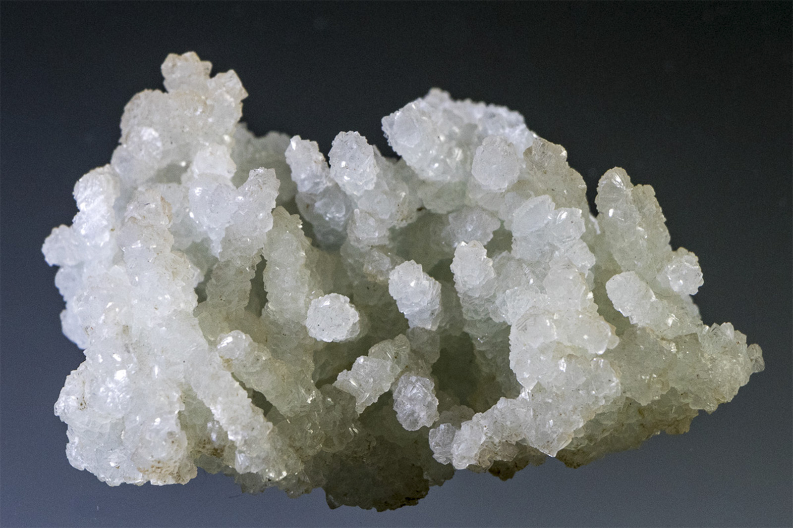

Prehnite pseudomorph after Laumontite
"Prehnite Worms"
III-00284
Malad Quarry, Malad, Mumbai Suburban District, Salsette Island, Konkan Division, Maharashtra, India
Purchased 6/15/2002 from eBay Seller (tigerowner) for $11.79 (Core Collection)
Details
Storage Type: Flat
Storage Location: 023 Silicates 08
Size class: Small Cabinet (0)
Dimensions: 7.0 × 5.5 × 3.4 cm
Mass: 83 g
Luster: Average, Vitreous